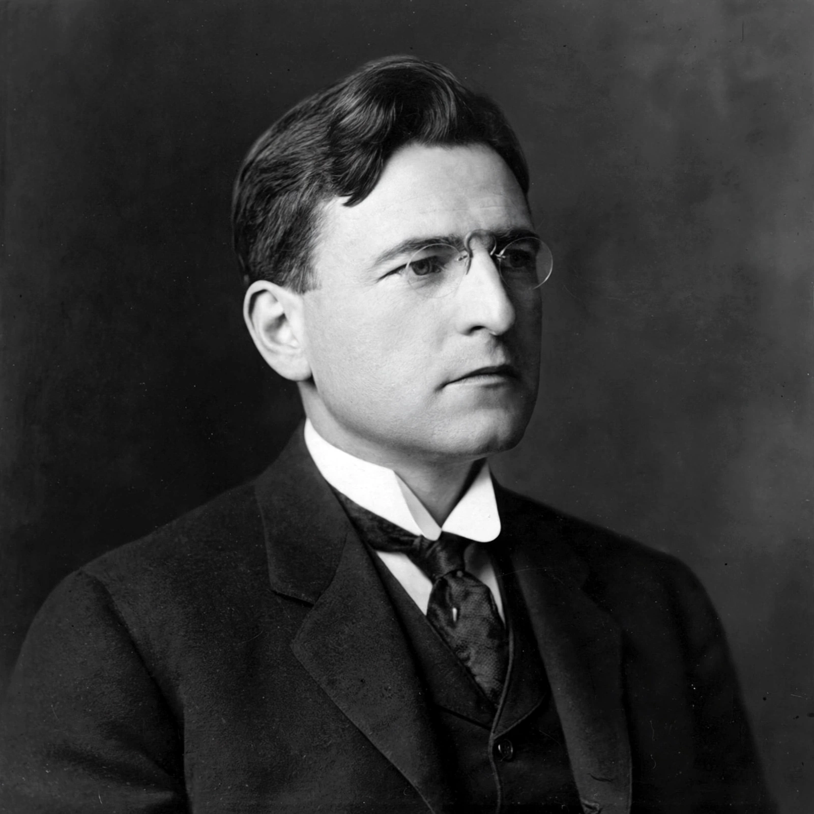

Wesley Newcomb Hohfeld (9 August 1879 – 21 October 1918) was an American jurist and legal theorist best known for his analysis of legal rights. In two articles published in the Yale Law Journal in 1913 and 1917, Hohfeld argued that the word "right" is used loosely to cover several distinct legal conceptions, and he proposed a systematic scheme of "jural correlatives" and "jural opposites" that remains foundational in analytical jurisprudence and is widely used in legal education.
| Wesley Newcomb Hohfeld | |
|---|---|
 Hohfeld as a young professor | |
| Born | 9 August 1879, Oakland, California, U.S. |
| Died | 21 October 1918 (aged 39), Alameda, California, U.S. |
| Education | University of California, Berkeley (BA); Harvard Law School (LLB) |
| Occupation | Legal scholar |
| Known for | Hohfeldian analysis of rights |
Hohfeld was born in Oakland, California, and graduated from the University of California in 1901, finishing first in his class. He then studied at Harvard Law School, where he was an editor of the Harvard Law Review and graduated with high honors in 1904. He practiced briefly and taught at Stanford Law School before joining the faculty of Yale Law School in 1914. His health was fragile, and he died in October 1918, at age 39, during the influenza pandemic period. His articles were collected posthumously in the book Fundamental Legal Conceptions as Applied in Judicial Reasoning and Other Legal Essays (1919), edited by Walter Wheeler Cook, with a later Yale edition appearing in 1923.
Hohfeld observed that courts and commentators used "right" to mean several different things, producing confusion. He distinguished four basic entitlements, each with a correlative and an opposite:
| Incident | Correlative | Opposite |
|---|---|---|
| Right (claim) | Duty | No-right |
| Privilege (liberty) | No-right | Duty |
| Power | Liability | Disability |
| Immunity | Disability | Liability |
A claim-right in one person correlates with a duty in another: if A has a right that B pay her $10, then B has a duty to pay. A privilege (or liberty) means A has no duty to refrain from an act — B correlatively has "no-right" that A not do it. A power is the ability to change legal relations (as when an owner transfers property or an agent binds a principal); the correlative is liability to have one's relations changed. An immunity protects a person from having their legal relations changed by another, whose position is a disability.
The first-order incidents (claims and privileges) concern conduct; the second-order incidents (powers and immunities) concern changes to legal relations themselves. Hohfeld also distinguished "paucital" rights held against one or a few persons (in personam) from "multital" rights held against people generally (in rem).
Hohfeld's scheme became a standard tool of legal analysis, influencing property theory, constitutional law, and philosophy of law. Later scholars such as Walter Wheeler Cook extended the framework, while others debated whether complex rights (such as property) are best understood as bundles of Hohfeldian incidents — an idea central to the "bundle of rights" conception of property. Philosophers including Judith Jarvis Thomson adapted the framework in moral theory.
From Wikipedia, the free encyclopedia (recreated from memory).